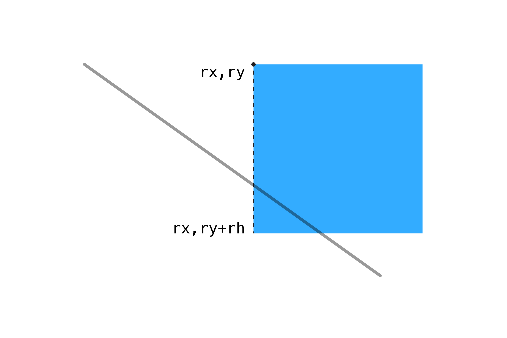
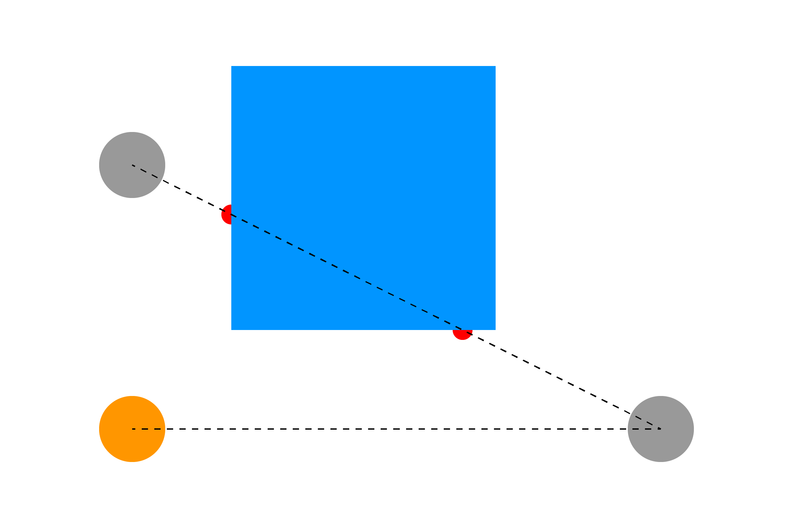

Насправді ми вже знаємо всю необхідну інформацію для того, щоб перевірити, чи лінія перетинається з прямокутником: це лише 4 перевірки на зіткнення лінії та лінії – по одній перевірці на кожну сторону прямокутника!
Наприклад, лівий край квадрата починається в точці (rx, ry) і тягнеться вниз до ry + rh. Ми можемо розглядати цю сторону як лінію і застосувати алгоритм з попереднього розділу:
const isLeftCollides = isLineWithLineCollides(x1,y1,x2,y2, rx,ry, rx,ry+rh);
Для легшого сприйняття візуалізуємо цю частину:

Те ж саме робимо з іншими трьома сторонами:
const isLeftCollides = isLineWithLineCollides(x1,y1,x2,y2, rx,ry,rx, ry+rh);
const isRightCollides = isLineWithLineCollides(x1,y1,x2,y2, rx+rw,ry, rx+rw,ry+rh);
const isTopCollides = isLineWithLineCollides(x1,y1,x2,y2, rx,ry, rx+rw,ry);
const isBottomCollides = isLineWithLineCollides(x1,y1,x2,y2, rx,ry+rh, rx+rw,ry+rh);
Якщо будь-яке з наведених вище тверджень вірне, тоді лінія перетинає прямокутник.
if (isLeftCollides || isRightCollides || isTopCollides || isBottomCollides) {
return true;
}
return false;
Повний приклад наведено нижче. Зауважте, що червоні точки намальовані у функції перевірки перетину лінії з лінією, показуючи де лінія перетинає прямокутник. Ви можете видалити їх із функції, якщо не хочете, щоб вони були у вашому проєкті.
// змінні для відрізка з контрольованим кінцем
let x1 = 0;
let y1 = 0;
let x2 = 20;
let y2 = 20;
// координати для квадрату
let sx = 200;
let sy = 100;
// змінні для ширини й висоти квадрата
let sw = 200;
let sh = 200;
function setup() {
createCanvas(window.innerWidth, window.innerHeight);
strokeWeight(5); // збільшена жирність, щоб краще бачити лінії
// визначення положення координат для лівого верхнього кута, щоб квадрат був по центру полотна
sx = (width - sw) / 2;
sy = (height - sw) / 2;
}
function draw() {
background(255);
// оновлення координат кінця відрізка координатами курсора
x1 = mouseX;
y1 = mouseY;
// результат перевірки на зіткнення
const isHit = isLineWithRectCollides(x1,y1,x2,y2, sx,sy,sw,sh);
// зміна кольору при перетині
if (isHit) fill(255,150,0);
else fill(0,150,255);
// малювання прямокутника
noStroke();
rect(sx, sy, sw, sh);
// малювання лінії
stroke(0, 150);
line(x1, y1, x2, y2);
}
// перевірка на перетин між лінією та прямокутником
function isLineWithRectCollides(x1, y1, x2, y2, rx, ry, rw, rh) {
// перевірка, чи лінія торкнулася будь-якої сторони прямокутника
const isLeftCollides = isLineWithLineCollides(x1,y1,x2,y2, rx,ry,rx, ry+rh);
const isRightCollides = isLineWithLineCollides(x1,y1,x2,y2, rx+rw,ry, rx+rw,ry+rh);
const isTopCollides = isLineWithLineCollides(x1,y1,x2,y2, rx,ry, rx+rw,ry);
const isBottomCollides = isLineWithLineCollides(x1,y1,x2,y2, rx,ry+rh, rx+rw,ry+rh);
// якщо БУДЬ-ЩО з наведеного вище вірно, значить лінія має перетин з прямокутником
if (isLeftCollides || isRightCollides || isTopCollides || isBottomCollides) {
return true;
}
return false;
}
// перевірка на перетин між лінією та кругом
function isLineWithLineCollides(x1, y1, x2, y2, x3, y3, x4, y4) {
// розрахунок напрямку ліній
const uA = ((x4-x3)*(y1-y3) - (y4-y3)*(x1-x3)) / ((y4-y3)*(x2-x1) - (x4-x3)*(y2-y1));
const uB = ((x2-x1)*(y1-y3) - (y2-y1)*(x1-x3)) / ((y4-y3)*(x2-x1) - (x4-x3)*(y2-y1));
// якщо uA та uB мають значення між 0 та 1, тоді лінії мають перетин
if (uA >= 0 && uA <= 1 && uB >= 0 && uB <= 1) {
// малювання точки у місці перетину ліній (опціонально)
const intersectionX = x1 + (uA * (x2-x1));
const intersectionY = y1 + (uA * (y2-y1));
fill(255,0,0);
noStroke();
ellipse(intersectionX, intersectionY, 20, 20);
return true;
}
return false;
}
Цей алгоритм також можна використовувати для перевірки прямої видимості. Скажімо, у вас є два об’єкти та прямокутна перешкода: якщо ви проводите лінію між одним об’єктом та іншим, а потім перевіряєте, чи вона потрапила у прямокутник, то зможете визначити, чи можуть об’єкти "бачити" один одного чи вони прикриті перешкодою.

Далі: Завдання 3